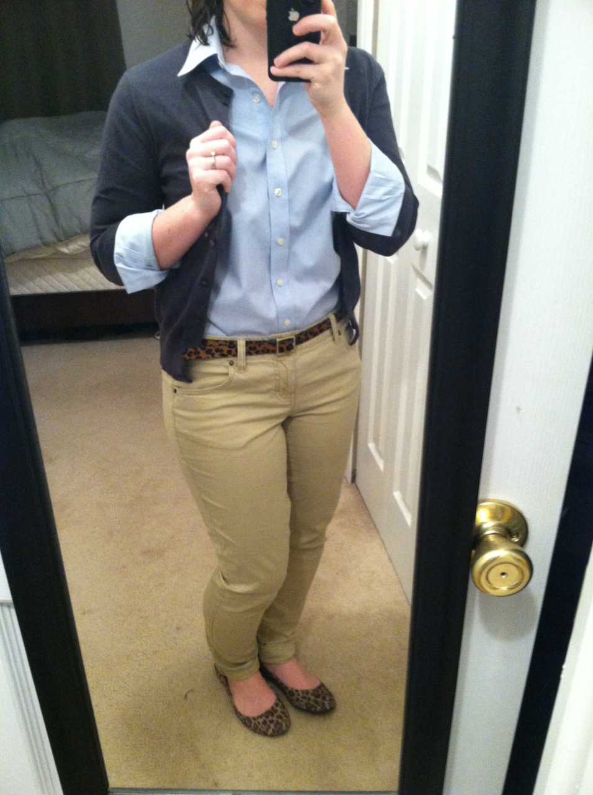
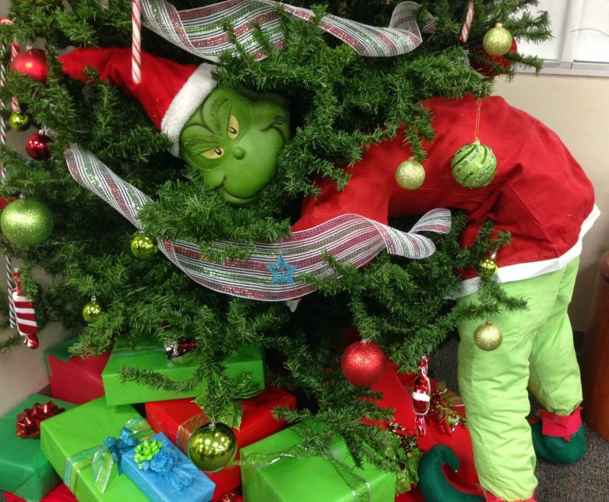
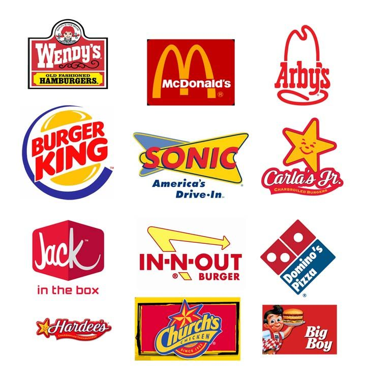
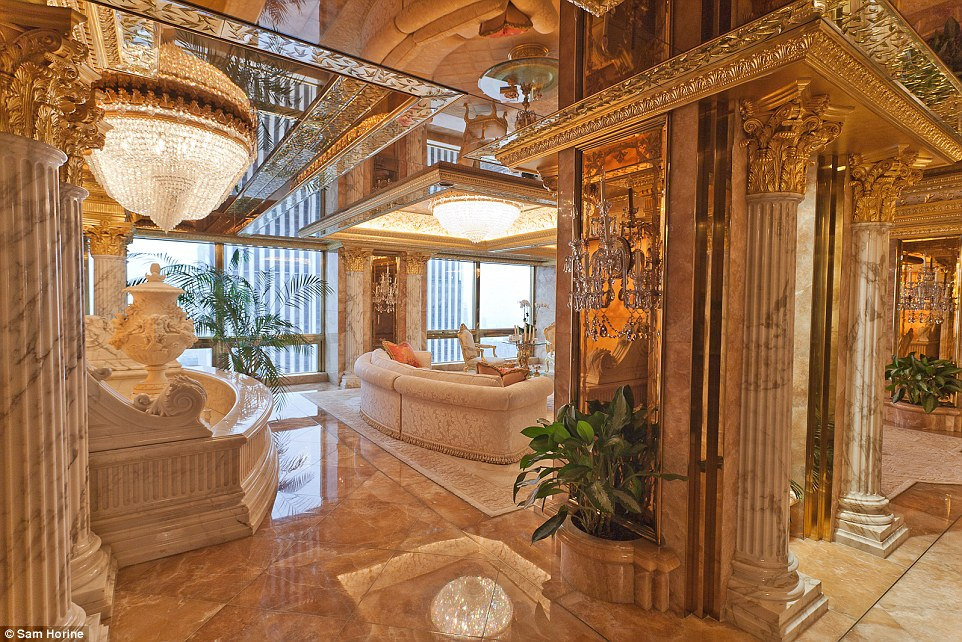

National flags, standard business clothing, holiday themes, global brands and products, tacky interiors of marble and gilding...




We've seen all of these color combinations a million times before.
We don't notice them any more.